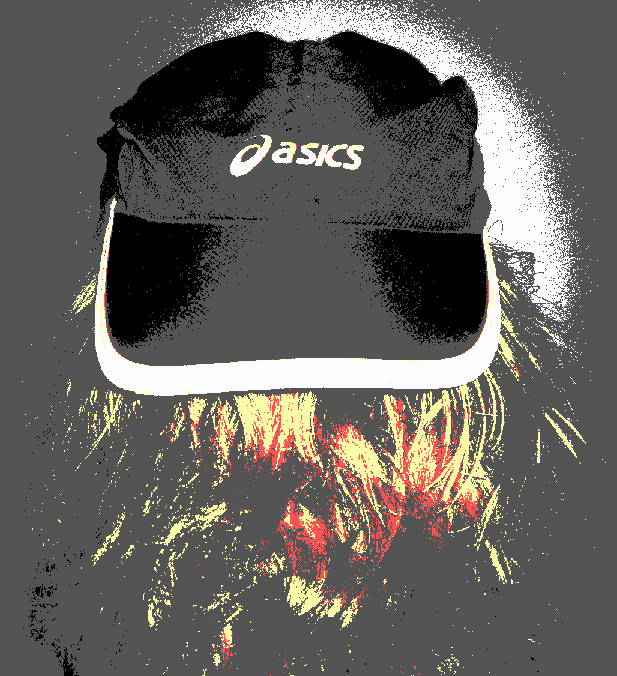

Weekly musing #9 - The freedom to choose your own cap
|  |
{kind=link}
Bitcoin Unlimited
Voting is over, and the results for this round of BUIPs and new member applications is in. Congratulations to the new members! The new system was quite pleasant to use. I hope it will continue to get improvements. One that most of us would probably like is batched voting, so one doesn't have to sign for every issue individually.
To those applicants who did not get in this time, I hope you will apply again and participate in the meantime! Some clearly did not make it in because existing members abstained or voted in low numbers, which troubles me a little. I think 21/49 voter turnout is not that great - certainly room for improvement.
Improvement Proposals
On the BUIP side, I am happy that BU has passed the BUIP026 to offer bounties for exploitable bugs.
CompactBlocks were accepted by a nice majority, so they will become reality in BU! This should lead to bandwidth savings all around. With BU's network code undergoing big refactorings on the development branch, it will be a bit of a challenge to develop, but nothing insurmountable. Existing tests from Core and XT can hopefully be re-used with minor adaptations.
I'm also excited about BUIP052 - this should get the project a separate Continuous Integration service for daily tests of the whole test suite. BU contributor awemany has been investigating fuzz testing, which would be a good thing to include on such daily tests.
A bit disappointing is that BUIP053 and BUIP054 did not reach quorum, and had to be closed despite quite solid majorities in favor of these proposals. It was just not enough this time around.
BUIP053 (Tweakable DoS responses) in particular is one I had high hopes for in terms of moving us away from a relatively static and inflexible scoring/banning design, towards something that places more power in the hands of users and reduces the impact of (potentially bad) developer decisions.
Also great news is that both BUIP055 (hard fork in near future) and BUIP056 (support-threshold triggered block size increases) were passed. The first one indicates that membership clearly recognizes the urgent need to act in offering a definite hard fork to the market, especially in light of the threat of UASF. BUIP056 appears a good way to reach consensus within the EB signaling framework pioneered by BU but which is being adopted by other clients such as Classic and hopefully more in future.
BUIP057 (BIP135 support) could be useful for future upgrade deployments, due to its flexibility in configuring activation thresholds and grace periods for proposed forking changes (whether soft or hard).
Nolnet reboot
Initial testing on BU's rebooted Nolnet (no-limits testnet) suggests there could still be issues related to unwanted node banning during block header synchronisation.
But the rebooted parameters of the network will ensure that Nolnet addresses are different from ordinary Bitcoin addresses, and so avoid possible mistakes that could result in some financial loss. Nolnet will also reset to minimum difficulty now, so that locking out testers by raising the difficulty to a very high value will not be possible so easily (at least, not for long periods).
BTCfork
The new Nolnet settings need to be integrated into MVFs, as I plan to have the MVF's be able to participate in fork tests, also w.r.t. BUIP055.
I found an embarrasing bit shifting bug in the replay protection code. Thanks go to Tom Harding for inspiring me to look over it again.
Funny how one can get inspired to look carefully at one's code when someone else is interested in it too 
Another small change that seemed prudent, was to bypass the MVF's adjusted difficulty retargeting code if the user specified that the difficulty was not to be reset at the fork activation. So now, if diffdrop=1, only the old difficulty code path is used. I had not really thought much about minority forks which want to keep the difficulty the same, but if there are such, then it's better to carry on running the existing code.
Bitcoin ABC
Still working on the ABC functionality - have been mostly reviewing changes by the project lead.
References
[1] Image of Asics cap: public domain (CC0) by freetrader freetrader@tuta.io